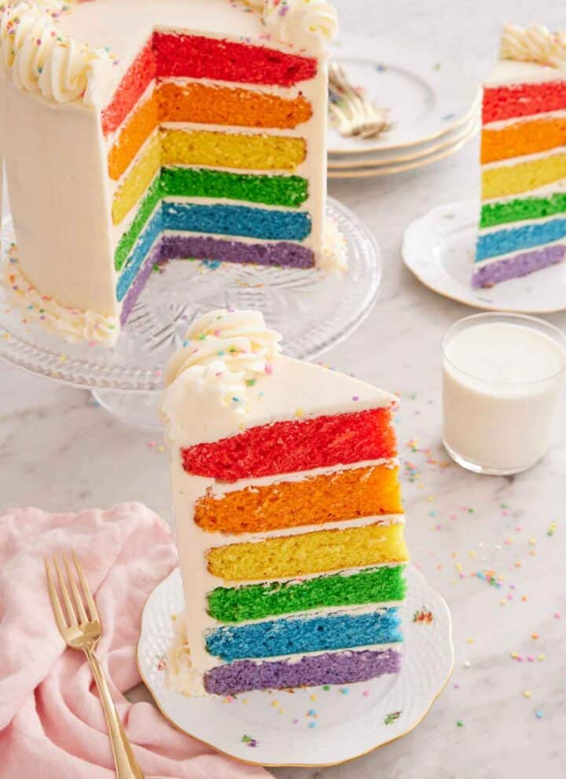

Nuestra base de recetas
En esta seccion econtraras todas las recetas que hemos recopilado durante años y que nos han mandado nuestros visitantes
Animate y mandanos tu receta usando el Formulario
Ingredientes
- 1 paquete de 226 g de queso crema a temperatura ambiente
- 1/2 taza de azúcar glas (60 g)
- 1 taza de puré de calabaza (245 g)
- 1 cucharadita de especias para pastel de calabaza
- 1 cucharadita de canela
- 1 cucharadita de extracto de vainilla
- 2 tazas de crema batida (150 g)
- 1 base de galleta graham
Preparacion
-
Agrega el queso crema ablandado en un tazón grande. Tamiza el azúcar en polvo sobre la parte superior. Con una batidora eléctrica de mano (o en el tazón
de una batidora de pie con el accesorio de paleta) bate a velocidad media durante 1 minuto, hasta que esté bien combinado.
-
Agrega el puré de calabaza, las especias para pastel de calabaza, la canela y la vainilla. Batir durante 1 minuto más hasta que esté completamente
combinado.
-
Incorpora la crema batida. (También puedes usar 2 tazas de cobertura batida congelada y descongelada en lugar de la crema batida recién batida).
- Vierte la cobertura en la base y espárcela en una capa uniforme.
-
Refrigerar durante al menos 8 horas o hasta 48 horas hasta que el relleno esté listo y se pueda cortar. Servir las rebanadas cubiertas con otra cucharada
de crema batida.
Ingredientes
- 1 masa de tarta de 23 cm congelada y sin hornear*
- 11/2 taza de nueces pecanas picadas gruesas 180 g
- 1 taza de jarabe de maíz oscuro 240 ml/350 g
- 3/4 taza de azúcar granulada 150 g
- 3 huevos grandes
- 4 cucharadas de mantequilla sin sal derretida (57 g)
- 2 cucharaditas de extracto de vainilla
- 3/4 cucharadita de sal
Preparacion
- Precaliente el horno a 220 °C (425 °F).
- Coloque la masa de tarta congelada en una bandeja para hornear y rellénela con las nueces pecanas picadas.
-
En un tazón mediano, mezcle el jarabe de maíz, el azúcar, los huevos, la mantequilla derretida, la vainilla y la sal hasta que estén bien combinados.
Vierta sobre las nueces pecanas. (Si lo desea, coloque mitades de nueces pecanas adicionales encima en un patrón decorativo).
-
Hornee durante 15 minutos. Reduzca la temperatura del horno a 175 °C (350 °F). Continúe horneando durante 35 a 40 minutos o hasta que el relleno se infle
y el centro se mueva levemente al sacudirlo suavemente. Cúbralo con papel de aluminio sin apretarlo en cualquier momento durante la cocción si la corteza
se dora demasiado rápido. Deje enfriar completamente sobre una rejilla antes de cortarlo.
Ingredientes
- 3 tazas de harina común (360 g)
- 1 cucharada de azúcar
- 1 cucharadita de sal
- 1 taza de mantequilla fría sin sal cortada en cubos (227 g)
- 4 a 6 cucharadas de agua helada (60-90 ml)
Preparacion
- En el bol de un procesador de alimentos, combine 1½ tazas de harina, azúcar y sal. Pulse unas cuantas veces para combinar.
-
Agregue la mitad de la mantequilla. Procese hasta que esté muy desmenuzada y comience a formar bolitas, aproximadamente 30 segundos. Esparza la
mantequilla restante y las 1½ tazas de harina restantes. Pulse 2 veces solo para distribuir.
-
Rocíe 4 cucharadas de agua helada sobre la mezcla. Pulse unas cuantas veces. Agregue agua adicional, una cucharada a la vez, según sea necesario, y pulse
una o dos veces después de cada adición. La mezcla debe unirse fácilmente al apretarla, pero no sentirse húmeda ni seca.
-
Transfiera la masa a la mesada y forme una bola. Corte la bola por la mitad y presione cada mitad en un plato. Envuélvala bien en film transparente y
refrigérela durante al menos 1 hora o hasta 2 días. Los discos también se pueden congelar durante unos meses y descongelar en el refrigerador durante la
noche antes de usarlos.
Ingredientes
- 4 huevos
- 1 taza de mantequilla sin sal (226 g) a temperatura ambiente
- 1 taza de azúcar (200 g)
- 11/2 taza de harina común (180 g)
- 1/2 taza de crema agria (120 ml)
- 1 cucharadita de sal
- 2 cucharadas de vainilla
- 1/2 cucharadita de polvo para hornear
Preparacion
- Precaliente el horno a 350 °F. Enmanteque y enharine un molde para hornear de 9 × 5 pulgadas.
- En un tazón mediano, bata la harina, la sal y el polvo para hornear y luego reserve.
-
En una batidora de pie equipada con un accesorio para batir, bata la mantequilla. Agregue el azúcar y mezcle hasta que la mezcla quede suave y esponjosa.
Raspe el tazón hacia abajo y bata unos segundos más.
-
Agregue los huevos de a uno por vez mientras mezcla a velocidad media. Raspe el tazón hacia abajo y bata hasta que se incorporen por completo.
- Agregue la crema agria y la vainilla. Mezcle hasta que se incorporen. Raspe el tazón hacia abajo.
-
Agregue la mezcla de harina y mezcle hasta que se combine. Raspe el recipiente y use la espátula para mezclar los restos de harina o mantequilla.
- Deje enfriar en el molde durante aproximadamente 10 minutos antes de transferirlo a una rejilla para enfriar.
Ingredientes
Para el pastel
- 2 tazas de harina común (240 g)
- 2 tazas de azúcar granulada (400 g)
- 1/2 taza de cacao en polvo sin azúcar (50 g)
- 1 1/2 cucharadita de levadura en polvo
- 1 1/2 cucharadita de bicarbonato de sodio
- 1/2 cucharadita de sal kosher
- 1 taza de leche (240 ml)
- 2 huevos grandes
- 1/2 taza de aceite vegetal (180 ml)
- 1 cucharada de extracto de vainilla
- 1 taza de agua hirviendo (240 ml)
Para la crema de mantequilla de chocolate
- 1 1/2 taza de mantequilla sin sal a temperatura ambiente (338 g)
- 1/4 taza de cacao en polvo sin azúcar (25 g)
- 1/4 cucharadita de sal
- 1 cucharadita de vainilla
- 6 tazas de azúcar en polvo (680 g)
- 3 a 4 cucharadas de leche (45-60 ml)
Preparacion
Para el pastel
-
Precalienta el horno a 350 °F. Engrasa 2 moldes para pastel redondos (de 9 pulgadas) con mantequilla o spray para hornear y cubre el fondo de cada molde
con papel pergamino. (Recomiendo usar tiras para pastel para que la cocción sea más pareja).
- Tamiza la harina, el azúcar, el cacao, el bicarbonato de sodio, el polvo para hornear y la sal en un tazón grande y bate para combinar.
-
En un tazón mediano, bate la leche, el huevo, el aceite y la vainilla. Agrega a la mezcla de harina y bate hasta que se integren bien. Vierte el agua
hirviendo y bate hasta que se integren bien. (La masa quedará líquida).
- Divide la masa entre los moldes para pastel preparados.
-
Hornea durante 35 minutos o hasta que un palillo insertado en el centro salga limpio. Deja que los pasteles se enfríen en los moldes sobre una rejilla de
alambre durante 15 minutos. Invierte con cuidado las capas de pastel sobre la rejilla, retira el papel pergamino y deja enfriar por completo.
Para la crema de mantequilla de chocolate
-
En el bol de una batidora de pie equipada con el accesorio de paleta, bate la mantequilla a velocidad media hasta que quede suave y cremosa,
aproximadamente 2 minutos. Agrega el cacao en polvo y la sal y mezcla a velocidad baja hasta que se combinen. Raspa el bol hacia abajo.
-
Mientras mezclas a velocidad baja, agrega gradualmente el azúcar en polvo alternando con un poco de leche de vez en cuando hasta 4 cucharadas. Una vez
que hayas agregado el azúcar, agrega la vainilla. Raspa el bol y bate a velocidad media-baja hasta que quede suave y esponjoso, aproximadamente 1
minuto.
Para el armado
-
Coloca una capa de torta enfriada sobre una base para tortas. Cubre con 1 taza de glaseado y extiéndelo por los bordes en una capa uniforme. Coloca la
capa de torta restante encima y esparce el resto del glaseado por todo el exterior de la torta. Puedes reservar un poco del glaseado para decorar con
manga si lo deseas.

Ingredientes
Para las capas de pastel arcoíris
- 5 tazas de harina común (600 g)
- 3 tazas de azúcar granulada (600 g)
- 1 cucharada de polvo para hornear
- 1/2 cucharadita de bicarbonato de sodio
- 1 cucharadita de sal
- 6 huevos grandes a temperatura ambiente
- 1 1/2 tazas de aceite vegetal (360 ml)
- 1 1/2 tazas de leche entera (360 ml)
- 1 cucharada de extracto de vainilla
- Colorante alimentario (rojo, amarillo, azul, verde)
Para la crema de mantequilla
- 2 1/2 tazas de mantequilla sin sal ablandada (565 g)
- 1/2 cucharadita de sal
- 10 tazas de azúcar glas (1200 g)
- 1/2 taza de crema a temperatura ambiente (120 ml)
- 2 cucharaditas de extracto de vainilla
Preparacion
Para las capas de pastel arcoíris
-
Precalienta el horno a 350 °F. Engrasa dos o tres moldes para pastel redondos de 8 pulgadas con spray para hornear o mantequilla. Cubre las bases con
papel pergamino.
- En un tazón grande, mezcla la harina, el azúcar, el polvo para hornear, el bicarbonato de sodio y la sal.
-
En otro tazón grande, combina los huevos, el aceite vegetal, la leche y la vainilla. Bate hasta que se combinen bien. Vierte la mezcla en la harina y
bate hasta que se combinen.
-
Divide la masa en 6 tazones. Colorea cada masa con colorante para alimentos para hacer masas de color rojo, naranja, amarillo, verde, azul y violeta.
Vierte una masa de un solo color en cada molde para pastel. Coloca los tazones de masa restantes en el refrigerador hasta que esté listo para hornear.
(Esto ayuda a evitar que el polvo para hornear reaccione mientras esperas para hornear).
-
Hornea durante 20 minutos o hasta que un palillo insertado en el centro salga limpio. Deja que los pasteles se enfríen durante 10 minutos en el molde,
luego retíralos y termina de enfriarlos sobre una rejilla. Lave los moldes, engrase y cubra nuevamente con papel de pergamino y hornee las masas
restantes.
Para la crema de mantequilla
-
En un tazón grande o en el tazón de una batidora de pie equipada con el accesorio de batidor, bata la mantequilla y la sal a velocidad media hasta que
quede muy esponjosa y pálida, aproximadamente 5 minutos.
-
Con la batidora a baja velocidad, agregue gradualmente el azúcar glas, una taza a la vez, agregando una cucharada de crema a la vez durante la mezcla.
Deténgase y raspe el tazón de vez en cuando durante la mezcla. Una vez que haya agregado todo el azúcar, agregue la vainilla y agregue crema adicional si
el glaseado se siente granulado al frotarlo entre los dedos. Aumente la velocidad a media-baja y bata hasta que quede liviano y esponjoso, aproximadamente
1 minuto.
Para el armado
-
Retire el papel de pergamino de las capas de pastel. Coloque la capa violeta en un plato para pastel y esparza ½ taza de glaseado sobre la parte
superior. Coloque la capa azul encima y esparza otra ½ taza de glaseado encima. Repita con las capas de pastel restantes en el orden verde, amarillo,
naranja y rojo. Extiende el resto del glaseado por todo el exterior del pastel. Enfríalo durante al menos 1 hora antes de servirlo. El pastel sobrante
debe cubrirse y puede conservarse a temperatura ambiente hasta por 3 días.